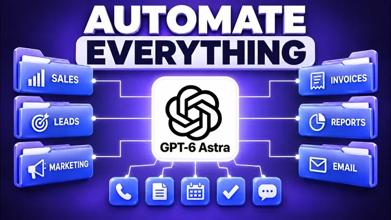

이제 GPT-6 Astra가 당신 사업을 대신 굴린다

원본 영상 보기 →
- AI를 "쓰는" 회사와 AI "네이티브" 회사는 다르다
- 많이 붙일수록 오히려 나빠진다
- 자동화의 성패는 "범위"에서 갈린다
한 줄 요약
AI 도입 컨설팅을 하는 닉 푸루(Nick Puru)가 ChatGPT 데스크톱 앱과 GPT-6 Astra로 메모리·스킬·플러그인·전문 워커·예약 작업을 차례로 붙여 "말만 하는 AI"를 "실제로 일하는 AI 팀"으로 바꾸는 설정 전체를 보여준다. 결론은 마법 버튼이 아니라, 워크플로우 하나를 세 번 연속 성공시킨 뒤 넓혀가라는 것이다.
전체 내용 정리
브라우저 채팅으로는 일이 안 되는 세 가지 이유와 "AI 네이티브"라는 목표
대부분의 사람은 웹 브라우저에서 일반 AI 채팅을 쓰지만, Nick은 이 방식에 실제 업무에 맞지 않는 문제가 세 가지 있다고 짚는다. 탭을 닫는 순간 맥락이 끊기고, 실제로 쓰는 도구에 접근하지 못하며, 사용자가 타이핑하는 동안에만 작동한다는 점이다. 그래서 그는 "AI를 사용하는 것"과 "AI 네이티브가 되는 것"을 구분한다. 전자는 직원들이 탭을 열어 AI에 접근하는 것이고, 후자는 회사가 소유한 시스템이 회사의 실제 업무 방식과 프로세스를 반영해 반복 업무를 처리하고 사람은 예외만 손보는 상태다. 그림으로 보면 가운데에 운영자가 앉아 있고 한쪽에는 AI 팀, 다른 쪽에는 이메일·문서·파일·CRM 같은 실제 도구가 있어서, 운영자는 필요한 도구를 가리키기만 하면 된다. Nick은 OpenAI 직원 98%가 이 시스템을 매일 쓰고 법무·재무·채용 팀 업무의 약 90%가 이 시스템을 거친다는 OpenAI 보고서를 인용하며, 개발자가 아닌 사용자가 가장 빠르게 늘고 있고 사용자 5명 중 1명꼴로 조사·스프레드시트·프레젠테이션·계약서 작성을 평이한 영어로 지시해 처리한다고 전한다. 그 자신도 팀 전체와 사업체를 이 시스템으로 옮기면서 코드는 한 줄도 쓰지 않았다고 말한다.
설정은 데스크톱 앱 하나, 요금제는 20달러 구독부터
모든 기능은 ChatGPT 데스크톱 앱 하나에 들어 있다. 상단에는 기존 대화형인 채팅 탭과, 목표를 입력하면 최종 결과물을 내놓는 작업(업무) 탭이 있고, 그 위에 코딩 도구 Codex가 있다. OpenAI 웹사이트에서 무료로 내려받아 ChatGPT 계정으로 로그인한 뒤 작업 탭에서 시작하면 된다. Nick의 팁은 개발자 플랫폼에서 사용량만큼 내는 방식(pay-as-you-go) 대신 구독을 고르라는 것인데, 매달 예상치 못한 추가 비용 없이 고정 금액만 내기 때문이다. 앱은 모든 요금제에서 쓸 수 있지만 작업 탭의 Astra는 유료 요금제에서만 지원된다. 플러스는 월 20달러 정도로 거의 모든 사람이 여기서 시작하면 되고, 그 위로 월 100달러 정도의 프로, 하루 종일 AI를 쓰며 데이터를 대량으로 다루는 사람을 위한 200달러 요금제가 있다. OpenAI에 따르면 헤비 유저는 보통 20~100달러 사이를 고르므로, 20달러로 시작해 가치가 확인되면 올리라는 조언이다.
메모리: 신입 사원 온보딩처럼 한 번만 가르치는 프로젝트 공간
Nick이 가장 중요하다고 꼽는 첫 번째 레이어는 메모리(Memory)다. 채팅 창 아래의 "프로젝트(Project)"는 비즈니스가 존재하는 공간으로, 그는 "고객 확보 방법", "3일 챌린지", "이메일 관련 내용", "짧은 슬라이드 제작" 같은 프로젝트를 만들어 두었다. 새 프로젝트를 만들 때는 기존 파일을 넣고 주제를 자세히 설명하는 게 중요하며, 기본 메모리(프로젝트 밖 채팅과 안쪽 채팅이 서로 기억을 오가는 방식)와 프로젝트 전용 메모리 중 하나를 고를 수 있다. SOP나 문서처럼 서비스 대상·대화 방식·가격·규칙·업무 처리 방식을 알려주는 자료가 있다면 소스 파일로 넣어두면 된다. 또 Astra에는 최근 긴 작업 전체에 걸쳐 스스로 메모를 남기고 나중에 다시 참조하는 기능이 추가돼, 예전 모델처럼 작업 초반을 잊거나 요약으로 뭉개 세부 정보를 잃는 대신 세부 사항을 붙들고 간다. Nick은 이를 "신입 사원 온보딩을 한 번만 해두면 모든 걸 기억해주는 것"에 비유한다. Codex를 자주 쓴다면 개인 설정에 사용자 지정 지침을 넣을 수 있고, 매번 자동으로 읽히는 agents.md라는 텍스트 파일에 구성·서비스 대상·상품·소통 방식·핵심 규칙·파일 위치·팀 구성을 담아둘 수 있다. 템플릿화의 요령은 핵심 규칙을 맨 위에 두고, 세부 메모는 클라이언트별 폴더 안에 넣는 것이다.
스킬: 한 번 적어두거나 한 번 녹화하면 매번 같은 방식으로 일하는 플레이북
스킬(Skill)은 AI에게 특정 작업을 내가 하던 방식·형식대로 수행하도록 가르쳐 둔 저장된 플레이북으로, 단계별로 진행된다는 점만 빼면 SOP(표준 운영 절차)와 같다. 가장 큰 장점은 스킬을 직접 찾아 실행할 필요가 없다는 것이다. "제안서 작성" 같은 작업을 입력하면 도구가 알맞은 스킬이 있는지 스스로 확인하고 그 지침을 그대로 따른다. Nick의 플러그인 메뉴에는 고객 보고서, 송장, 회의 브리핑, 제안서, 스폰서 회신, 영상 개요, 뉴스레터, LinkedIn 게시물, YouTube 썸네일 제작 스킬이 들어 있는데, 전부 반복하던 업무를 한 번 적어둔 것이다. 예컨대 스폰서 회신 스킬은 "지정된 이메일을 읽고, 워크스페이스 후원 규칙과 요금표를 지켜 짧고 친절한 답장 초안만 작성해 저장하라"는 단순한 지침이고, 말투·길이·필수 포함 내용·먼저 묻지 않고는 절대 건드리면 안 되는 내용까지 더 구체적으로 적을 수도 있다. 작업 탭에 "최근 후원자에게 보낼 답장 초안을 써줘"라고만 해도 스킬 이름을 말할 필요 없이 약 1분 뒤 최신 스폰서 스레드에 초안이 생긴다. 직접 쓰기 부담스럽다면 "스킬 생성자(skill creator)"에게 "송장 양식 몇 개를 줄 테니 템플릿화해서 송장 스킬을 만들어줘"라고 요청할 수 있고, 스킬은 컴퓨터에 저장되는 단순한 파일이라 팀원과 주고받기도 쉽다. 세 번째 방법은 녹화다. 화면에서 작업을 평소처럼 한 번 하면 시스템이 기록해 스킬을 자동으로 만든다. Nick은 GoHighLevel에서 캘린더의 클로저(Closer) 일정을 확인하고 기회(Opportunities)의 B2B 파이프라인 중 전략 회의 참석(Strategy Call Attended) 항목을 열어 정보를 복사하는 과정을 녹화해 보인다. 매주 월요일 내보내는 보고서, 송장 제출, 커뮤니티 게시, CRM에서 일주일에 15번쯤 하는 클릭처럼 지침을 따로 쓰지 않던 작업이 대상이다. 다만 이 기능은 현재 Mac에서만 되고 설정에서 "컴퓨터 사용(Computer use)"을 켜야 하며, 안정적이고 반복 가능하며 완료 지점이 명확한 프로세스에만 맞다. 판매 프로세스 전체를 한 번에 녹화하려 들면 안 된다.
플러그인: 1,400개 넘게 붙일 수 있지만 두세 개만 연결하라
실제로 비즈니스를 돌리려면 이메일·문서·고객 기록·CRM처럼 이미 쓰는 도구와 연동해야 하는데, 플러그인(Plugin) 메뉴에서 1,400개가 넘는 앱에 접근할 수 있다. Microsoft Power BI나 AWS 데이터 분석도 있지만 대부분에게 중요한 건 Slack, Google Calendar, Gmail, Google Drive, 그리고 Teams·스프레드시트·Outlook 같은 Microsoft 제품이다. Nick은 Cloudflare, ClickUp, Notion, Drive, Slack, 호텔 예약 사이트 booking.com을 설치해 휴가 예약, PDF 정리, 문서 정리 등에 썼고, 가장 많이 쓴 것은 회의록을 자동으로 만들어주는 AI 회의록 녹음기다. 팀 회의록을 분석해 다음 단계의 할 일을 계획하고, 최근 새 캠페인의 시장 진출 전략 회의 내용을 바탕으로 카피라이팅까지 돕게 했다. 연결은 계정 연결을 눌러 로그인하면 되고 경우에 따라 API 키가 필요하다. 연결을 마치면 하나의 명령으로 여러 도구를 동시에 처리할 수 있어 "AI로 회사를 운영한다"는 말이 슬로건에 그치지 않는다. 주의할 점은 두 가지다. 많을수록 좋은 게 아니라서 실제로 쓰는 도구 두세 개만 연결해야 하는데, 그의 경험상 모든 플러그인을 켜면 작업 시작 전에만 약 30만 토큰의 오버헤드가 생겨 그대로 낭비된다. 그리고 온라인에서 찾은 아무 플러그인보다 공식적이고 잘 관리되는 플러그인을 써야 한다.
전문 워커와 통제: 부서를 나누고, 계획을 검토하고, 돈과 고객이 걸린 일은 직접 승인한다
작업 탭은 질문에 답만 하는 채팅과 달리 목표를 단계로 나눠 진행하고 프레젠테이션·스프레드시트·문서·웹페이지 같은 결과물을 내며, 필요하면 몇 시간이고 매달린다. Nick은 계획 모드(Plan mode)를 켜고 가상의 HVAC 회사 Northside Heating을 위한 1페이지 제안서와 스프레드시트 요약을 요청해, 요약·결과물·프로젝트 세부 정보·검증 내용이 담긴 계획을 먼저 검토한 뒤 "이 계획을 실행해"라고 지시하는 흐름을 보여준다. 구조로 보면 맨 위에 운영자, 그 아래 제안서·콘텐츠·운영·연구 담당 같은 부서가 있고 각자 자기 업무만 맡는다. 하나의 시스템에 맥락을 너무 많이 넣으면 혼란스러워져 임의로 판단하거나 틀린 답을 내놓기 때문이며, 앱에서는 여러 작업을 동시에 돌리되 각 작업을 필요한 맥락만 가진 별도 프로젝트 안에서 실행하면 된다. OpenAI 구축 가이드도 첫날부터 워커 20개를 만들지 말고 규칙→스킬→도구 연결→전문 워커 순으로 가라고 권하며, Nick 역시 제대로 튜닝된 워커 하나가 대충 만든 워커 10개보다 낫다고 본다. 원치 않는 작업을 막는 장치는 세 가지다. 계획 모드는 100개가 넘는 클라이언트 파일이 뒤섞인 폴더 정리처럼 큰 작업에서 사용자가 승인할 때까지 아무것도 실행하지 않는다. 승인 기능은 무언가를 보내거나 바꾸기 전에 멈추고 "이 내용을 전송하시겠습니까?"라고 묻는다. 마지막으로 자율성 수준을 설정에서 항상 승인 요청, 자동 승인, 인터넷과 모든 파일에 대한 완전한 접근 권한 중에서 고를 수 있는데, 완전 접근은 중요한 파일이 있거나 팀 환경이라면 권하지 않는다. Nick 자신은 대부분을 자동으로 처리해주는 자동 승인을 쓴다. 그래도 돈이 나가거나 고객에게 무언가가 전송되는 작업은 여전히 사람이 승인해야 하며, 이것은 제약이 아니라 시스템을 제대로 운영하는 방식이라고 강조한다.
예약 작업과 클라우드 실행: 지켜보지 않아도 돌아가게
다음 단계는 사람이 매번 시작하지 않아도 일상 업무가 돌아가게 하는 것이다. 예약 작업(Scheduled tasks)은 채팅 창에 원하는 작업과 실행 시간을 쉬운 말로 설명하면 프롬프트가 자동으로 만들어지고, 편집 화면에서 제목·설명·세부 내용·실행 환경(기기 또는 클라우드)·특정 채팅·빈도(매일, 평일, 매주, 사용자 지정 간격)·알림 방식(중요 업데이트만 또는 실패한 실행만)을 직접 정할 수도 있다. Nick은 마이크로 음성 입력을 추천하는데, 대부분의 사람은 타이핑보다 말이 훨씬 빠르기 때문이다. 실행 위치도 중요하다. 로컬 실행은 내 파일과 지금까지 설정한 기능을 모두 쓰지만 앱이 켜져 있고 컴퓨터가 켜져 있을 때만 작동한다. 클라우드 실행은 노트북이 꺼져 있어도 돌아가고, 타이머뿐 아니라 잠재 고객의 새 이메일이 오면 답장 초안을 쓰거나 Slack 채널에 글이 올라오면 로그를 남기는 식으로 이벤트에도 반응한다. 다만 이 설정은 데스크톱 앱이 아니라 웹이나 모바일 앱에서 해야 한다. 설정의 "휴대폰" 메뉴에서 QR 코드로 휴대폰을 연결하면 출장지 카페나 헬스장에서도 같은 설정으로 채팅 기록과 최근 작업을 확인하며 일할 수 있다.
마법 버튼은 아니다: 비용, 데이터 정리, 그리고 "워크플로우 하나를 세 번"
마지막으로 Nick은 녹화 기능을 확장한 "컴퓨터 사용"을 소개한다. Astra가 화면을 제어해 플러그인이 없는 앱도 직접 실행하고, API 키가 없는 CRM이라면 헤드리스 브라우저를 쓰며, OpenAI에 따르면 이전 모델보다 약 두 배 빠르고 사용자가 일하는 동안 백그라운드에서 돈다. 그러나 그는 이것이 자는 동안 회사를 운영해주는 마법 버튼은 아니라고 선을 긋는다. OpenAI의 98%라는 수치는 자체 보고이고, OpenAI조차 회사를 통째로 넘긴 게 아니라 사람들이 잘 정의된 업무를 맡긴다는 뜻이라고 설명한다. 잘 정의된 작업에서는 탁월하지만 일반 관리자처럼 알아서 맡겨두기에는 아직 이르니, 명확히 정의된 일을 주고 중요한 결과는 직접 검토하라는 것이 그의 권장 사용법이다. 비용 면에서는 작업량이 실제 작업 규모에 따라 계산되고, OpenAI 도움말 페이지 기준 헤비 유저는 1인당 월 약 100달러가 든다. 그러니 작게 시작해 사용량을 지켜보고 효과가 확실한 부분만 넓혀야 한다. 또 "쓰레기를 넣으면 쓰레기가 나온다"는 원칙대로 파일과 메모가 지저분하면 결과물도 엉망이 되므로, 조금만 정리해도 효과가 크다. 황금률은 워크플로우 하나를 골라 세 번 연속 성공시킨 뒤 인접한 프로세스나 부서로 넓히는 것이다. 한 번에 전부 자동화하려던 사람들은 팀이 안 쓰고 수작업으로 돌아가 "AI는 사기"라며 포기하지만, 한 가지에 집중해 성공한 사람들은 결국 전체 운영을 이 시스템으로 돌리게 된다. Nick은 이 변화의 본질이 더 빠른 도구가 아니라 일하는 방식 자체의 변화, 곧 일을 직접 처리하는 사람에서 일을 지휘하고 결과를 검토하는 사람으로 바뀌는 데 있다고 정리한다. 그가 100개 가까운 기업과 일하며 본 공통 낭비는 서류·승인·답변을 받으려고 사람을 쫓아다니는 일, 시스템 사이에서 정보를 손으로 옮기는 일, 매주 누군가 다시 만들지만 아무도 읽지 않는 보고서였다.
핵심 인사이트
- AI를 "쓰는" 회사와 AI "네이티브" 회사는 다르다: 탭을 열어 묻는 방식은 맥락이 끊기고 도구에 못 닿고 내가 칠 때만 움직인다. 업무 방식을 메모리·스킬로 한 번 가르쳐 둔 시스템이어야 반복 업무를 넘기고 사람은 예외만 볼 수 있다.
- 많이 붙일수록 오히려 나빠진다: 플러그인을 전부 켜면 작업 전에만 약 30만 토큰이 새고, 한 워커에 맥락을 몰아넣으면 틀린 답이 나온다. 도구는 두세 개, 워커는 역할별로 나눠 필요한 맥락만 주는 게 성능과 비용을 모두 지킨다.
- 자동화의 성패는 "범위"에서 갈린다: 잘 정의되고 완료 지점이 분명한 워크플로우 하나를 세 번 연속 성공시킨 뒤 넓히는 사람만 결국 전체 운영을 옮긴다. 돈과 고객이 걸린 단계는 끝까지 사람 승인으로 남겨야 한다.
오늘 당장 해볼 것
- 이번 주에 반복한 업무 중 "매번 같은 순서로 하고, 끝났는지가 분명한 일" 하나(예: 월요일 주간 보고서, 후원·문의 이메일 답장, 송장 발행)를 골라 순서·말투·절대 건드리면 안 되는 것을 한 페이지 SOP로 적어두기.
- ChatGPT 플러스(월 20달러) 데스크톱 앱에서 프로젝트를 하나 만들고 그 SOP와 가격표·자주 쓰는 답변 예시를 소스 파일로 넣은 뒤, 작업 탭에 "이 규칙대로 초안만 써줘"라고 요청해 결과를 직접 검토하기.
- 자동화를 외부 업체에 맡겼거나 맡길 예정이라면 "연결된 도구가 몇 개인지, 고객에게 전송·결제되는 단계에서 사람 승인을 받는지, 같은 작업을 세 번 연속 성공한 기록이 있는지" 세 가지를 물어보기.